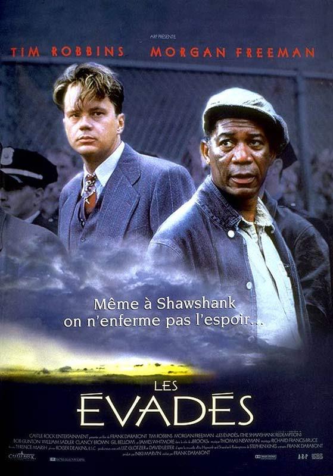

Ouramdane Makhoukh
Programmer
De formation ingénieur, je suis actuellment en formation pour devenir développeur FullStack
See your self
Le dernier samouraiEn 1876, le capitaine Nathan Algren vit avec les souvenirs des batailles sanglantes menées contre les Sioux. Fort de son expérience au combat, il devient conseiller militaire pour le compte de l'empereur japonais soucieux d'ouvrir son pays aux traditions et au commerce occidentaux et d'éradiquer l'ancienne caste guerrière des samouraïs. Mais ceux-ci influent sur le capitaine Algren, qui se trouve bientôt pris entre deux feux, au coeur d'une confrontation entre deux époques et deux mondes avec, pour le guider, son sens de l'honneur. |
|
 |
La ligne vertePaul Edgecomb, pensionnaire centenaire d'une maison de retraite, est hanté par ses souvenirs. Gardien-chef du pénitencier de Cold Mountain en 1935, il était chargé de veiller au bon déroulement des exécutions capitales en s’efforçant d'adoucir les derniers moments des condamnés. Parmi eux se trouvait un colosse du nom de John Coffey, accusé du viol et du meurtre de deux fillettes. Intrigué par cet homme candide et timide aux dons magiques, Edgecomb va tisser avec lui des liens très forts. |
|  |
Les évadésEn 1947, Andy Dufresne, un jeune banquier, est condamné à la prison à vie pour le meurtre de sa femme et de son amant. Ayant beau clamer son innocence, il est emprisonné à Shawshank, le pénitencier le plus sévère de l'Etat du Maine. Il y fait la rencontre de Red, un Noir désabusé, détenu depuis vingt ans. Commence alors une grande histoire d'amitié entre les deux hommes... |